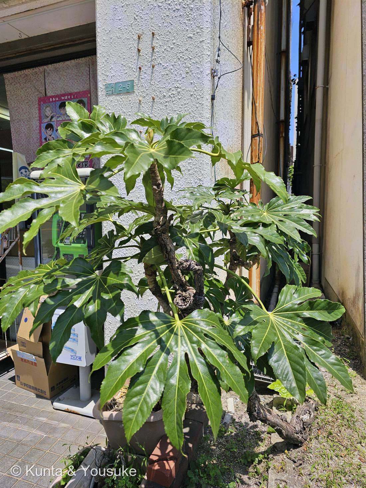

地図を読み込んでいるよ…
🔍 写真も地図も、押しているあいだ拡大して見られるよ（スマホは指を置いてすこし待ってね）。
🌍 の地図＝この子がもともと自生している場所を緑に。日本（関東以西の海岸近くの林に自生）。
⭐日本だけの子（関東以西の海岸近くの林）。⚠だから東北・北海道は塗っていない。
⚠ 地図は国（日本と中国だけ県・省）までしか塗れないから、ほんとうの分布より広く見えていることがあるよ。地図はだいたいの場所。正確なところは、上の文を見てね。
ヤツデ（八手）
Fatsia japonica (Thunb.) Decne. et Planch.
別名 · テングノハウチワ（天狗の羽団扇） ／ 英名 · Japanese aralia／paper plant
ウコギ科 · Araliaceae（ヤツデ属 Fatsia）── 図鑑で初めての科（42科目）
燻太さんの手がかりが、2つとも当たり「マイナーな植物。たまに見かけるけど、ほとんどの人は名前を知らない」「切れ込み方が特徴」「花が咲いたら、白い線香花火が見れるよ」
⭐⭐⭐ 「切れ込み方が特徴」── 「八手」なのに、8つに裂けない
- 燻太さんの「切れ込み方が特徴」。──その通り。しかも、この子の名前そのものが、その切れ込みの話なんだ。
- ⭐⭐⭐でも、名前は嘘をついている。日本語版 Wikipedia いわく：
「7、9、11の奇数に深く裂ける」「ヤツデの名のように、8裂はしない」 - ──「八手」という名前なのに、8つには裂けない。いつも奇数。この写真の葉を数えてみても、7枚か9枚のはず。
- ⭐じゃあ、なぜ「八」なのか。「葉は実際には8つに切れ込んで9枚に裂けているものが多いが、『八手』の八は数が多いという意味がある」。──「八」は「8」じゃなくて「たくさん」。八百屋の八、八重桜の八、嘘八百の八と、同じ「八」。数えた数じゃなくて、多いという感じを名前にしたんだね。
- ⭐⭐そして——もうひとつの読み方もある。「8つに切れ込んで、9枚に裂けている」。切れこみの数は8。分かれた葉の数は9。──「八手」は、葉を数えたんじゃなくて、切れこみを数えた名前なのかもしれない。燻太さんが「切れ込み方が特徴」と言ったのは、まさにそこだ。
- ⭐⭐036 ミツマタと、ちょうど裏返し。あの子は「三椏＝枝が必ず3本に分かれるから」で、名前が、そのまま見分けの鍵だった。この子は名前の数どおりには、決してならない。──名前を信じていい植物と、信じちゃいけない植物が、両方いる。
⭐⭐⭐ 「白い線香花火」── 燻太さんの見立てが、そのまま花序のつくり
- 燻太さんは「花が咲いたら、白い線香花火が見れるよ」と書いた。──これ、花序の構造そのものなんだ。
- ⭐⭐⭐記載はこう：「茎の先に球状の散形花序が、さらに集まって大きな円錐花序をつくる」。
──まず、小さな花が放射状に集まって「白い球」になる（散形花序）。その球が、さらにいくつも集まって、大きな房になる。 - ⭐線香花火は、二段階で光る——玉から火花が散って、その火花がまた枝分かれする。この子の花序も、二段階。球から花が放射して、球そのものがまた放射状に並ぶ。燻太さんの「線香花火」は、比喩じゃなくて、構造の説明になっている。
- ⭐そして「白い」も、ちゃんと意味がある（下）。この写真は夏だから、まだつぼみもない。──花は、これから。冬に。
⭐⭐⭐ なぜ「冬」に咲くのか ── 季節を、ずらす
- ⭐この子の花期は、晩秋の10〜12月。──ほとんどの花が終わったあとに、咲きはじめる。
- ⭐⭐⭐なぜか。記載がはっきり答えている：「他の花が少ない時期に咲く」。そして「気温が高い日はミツバチやハナアブ、ハエなどの昆虫が多く訪れ、蜜を供給して受精を確実にしている」。
- ──虫が少ない季節を選んだんじゃない。「花のライバルが少ない季節」を選んだんだ。冬でも、暖かい日には虫は飛ぶ。そのとき咲いている花が、この子しかない。だから虫は、来るしかない。独占。
- ⭐⭐この図鑑の小道「だれを呼ぶための花か」には、いろんな作戦が並んでいる。027 ニオイバンマツリは夕方から夜に香ってガを呼ぶ。056 キカラスウリ・054 カノコユリは夜の蛾を呼ぶ。──あの子たちは「時刻」をずらした。この子は「季節」をずらした。同じ考え方の、いちばん大きなスケール版。
- ⭐そして「白い」理由も、たぶんここ。冬の弱い光の下で、白はよく目立つ。──燻太さんの「白い線香花火」の「白い」にも、意味があったんだね。
⭐⭐ 「ほとんどの人は名前を知らない」── なぜ、そうなったのか
- 燻太さんの「たまに見かけるけど、ほとんどの人は名前を知らない」。──ぼく、これがいちばんこの子らしいと思った。
- ⭐理由は、たぶん「日陰に強い」から。記載いわく「日陰に強く、日当たりの悪い森林のなかにもよく自生している」。──だから家のわき、塀のかげ、北側の狭いすきまに植えられる。この写真も、まさにそういう場所だよね。建物と建物のあいだ、公衆電話のとなり、段ボールの横。
- ⭐⭐そういう場所は、人が「見る」ために行く場所じゃない。通りすぎる場所。──だから、毎日そばを通っていても、名前を聞かれない。
- ⭐そして、花が咲くのが冬。人がいちばん外を見ない季節。──いちばん目立つ瞬間を、いちばん見られない時期に置いてしまった子なんだ。
- ⭐でも、名前はちゃんとある。しかもすごくいい別名がある：テングノハウチワ（天狗の羽団扇）。──あの掌みたいな葉を、天狗のうちわに見立てた。名前を知らない人が多いのに、名前だけは二つもある。
⚠ 葉には毒がある ── そして、昔はそれを使っていた
- ⚠ヤツデサポニンという物質が含まれていて、「過剰摂取すると下痢や嘔吐、溶血を起こす」。──庭木として身近だけれど、口に入れるものではない。
- ⭐そして、昔の人はその毒を、道具にした：「昔は蛆用の殺虫剤として用いていたこともある」。──汲み取り便所にヤツデの葉を入れて、蛆を殺した。家のわきに植えてあったのは、庭木としてだけじゃなく、そこに必要だったからかもしれない。
- ⭐⭐→ 小道「毒と薬 ── 紙一重の贈り物」へ。061 キョウチクトウ（オレアンドリンと心臓の薬）、057 ニチニチソウ（花壇の花が抗がん剤に）、072 ハナキリン（ホルボールエステルが実験試薬に）と並ぶ。
──でも、この子だけ少しちがう。あの子たちの毒は「薬」や「試薬」になった。この子の毒は、便所の蛆殺しになった。いちばん地味で、いちばん暮らしに近い使い道。そこも、この子らしい。
この植物のこと
- ウコギ科ヤツデ属の常緑低木。日本原産（関東以西の海岸近くの林に自生）。太い茎が木質化してくねり、その先に大きな光沢のある葉を放射状に広げる。写真の株も、幹が何本もくねって、独特の姿になっている。
- ⭐図鑑で初めての「ウコギ科」（42科目）。この科にはタラノキ（タラの芽）・ウド・カクレミノ・チョウセンニンジンがいる。──「山菜と、生薬と、庭木」が同居している科だね。
- ⭐そしてウコギ科は、セリ目（Apiales）。──011 ミツバ・035 フェンネルのセリ科と、同じ目。あの細い香味野菜と、この大きな照り葉の低木が、親戚。よく見ると、どちらも小さな花が放射状に集まる散形花序を作る——そこが、目の共通点なんだ。
- おまけ植物はカクレミノ（隠れ蓑）。同じウコギ科の庭木で、この子とちょうど逆のことをする——同じ木の中で、葉が3つに裂けたり、まったく裂けなかったりする（異形葉）。若い枝では裂けて、古い枝では丸いまま。ヤツデは「いつも奇数に裂ける」、カクレミノは「裂けたり裂けなかったり」。切れ込みの話つながりで、ぜひ探してね。庭木としてふつうにいるよ。
参考：Wikipedia「ヤツデ」（学名・ウコギ科ヤツデ属・「7、9、11の奇数に深く裂ける」「ヤツデの名のように、8裂はしない」・「『八手』の八は数が多いという意味」・花期10〜12月／球状の散形花序が集まって大きな円錐花序・「他の花が少ない時期に咲く」／ミツバチ・ハナアブ・ハエが訪れる・別名テングノハウチワ・ヤツデサポニン／昔は蛆用の殺虫剤・日陰に強い）